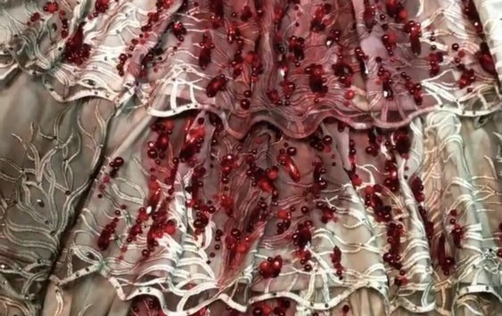
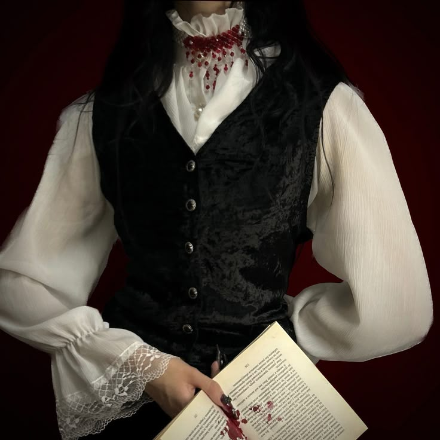
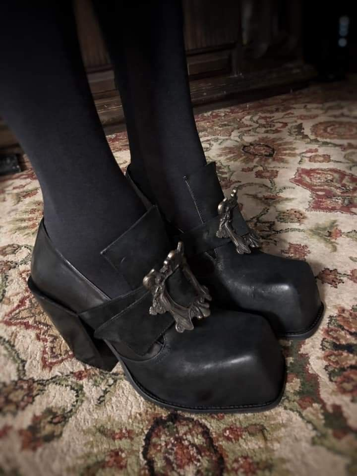
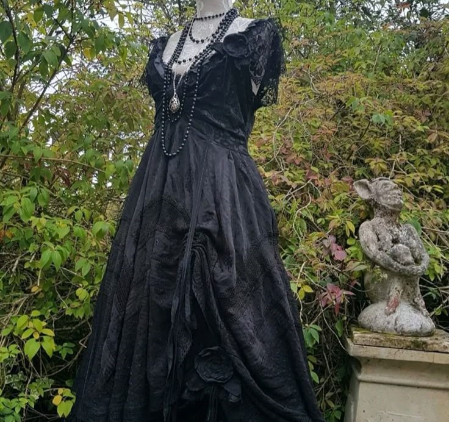
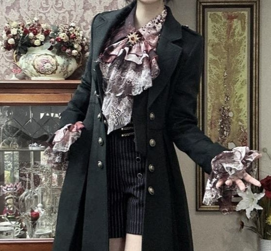
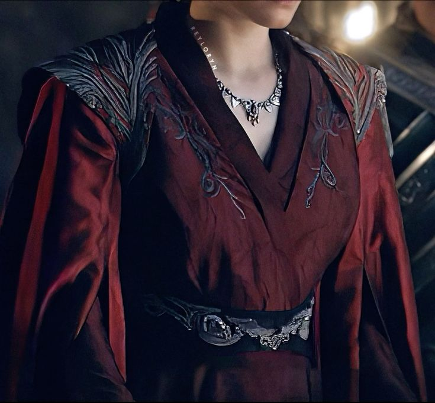

TheAddams.
°༺Walkthrough Closet of A Blood Sucker｡ ༻°

~.*- Medieval Era -*.~
Formality above all
omw to see boo!
"Meet me at our grave"...
Moonlight Dutiesִֶָ ☾.
Vampire fashion falls under the gothic category or even dark medieval fashion. Their makeup usually consists of a pale white base and dark eyeshadow along with a dark shade of lipstick to make it seem undead.
 ⋆༺ Further information ༻⋆✮⋆˙The Kiss at Dawn
Most outfits would corespond to the nightly atmosphere, but goths too have their own style under the sun. At night their attire deemed cold and metallic following the olden days, but during the day comes with a More simple and lighter in contrast outifits.
 ⋆༺𓆩 More 𓆪༻⋆